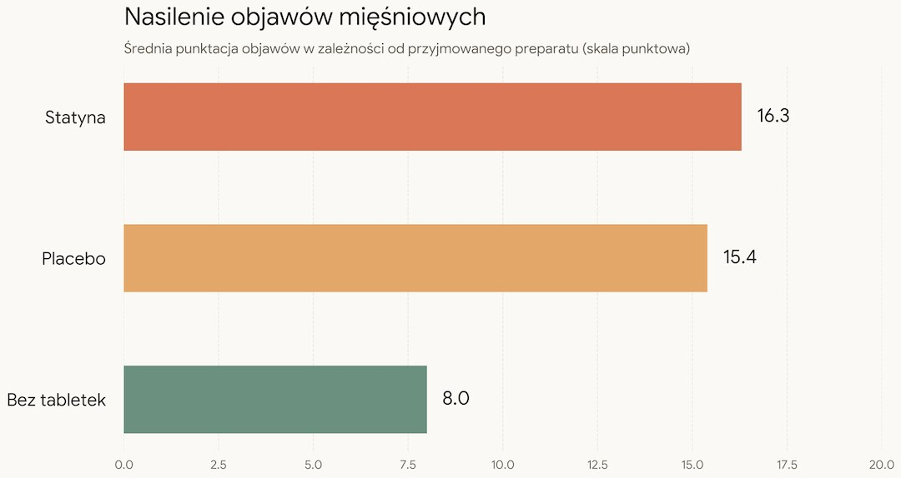
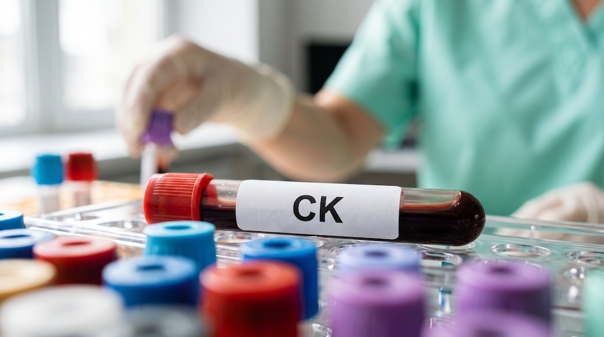

Wpisujesz w Google „statyny po 50 skutki uboczne” i po pięciu minutach jesteś pewien, że twoje łydki właśnie się rozpadają. Znam to. Sąsiad odstawił, szwagier odstawił, forum krzyczy. Problem jest prawdziwy, ale dużo mniejszy, niż wygląda – i zamiast zgadywać, można go sprawdzić.
Szybka odpowiedź
W dużych badaniach z placebo ponad 90% bólów mięśni zgłaszanych na statynie nie wynikało z leku. Nie odstawiaj go sam: jeśli ból jest silny, mięśnie słabną albo mocz ciemnieje, pilnie skontaktuj się z lekarzem i zbadaj CK. Koenzym Q10 nie ma mocnych dowodów, a przy prawdziwej nietolerancji są inne leki.
Kluczowe wnioski
- W badaniach z placebo ponad 90% bólów mięśni zgłaszanych na statynie nie było spowodowanych samym lekiem.
- Nie odstawiaj statyny sam; silne osłabienie, gorączka lub ciemny mocz wymagają pilnego kontaktu z lekarzem i badania CK.
- Koenzym Q10 nie ma mocnych dowodów skuteczności, bo metaanalizy małych i krótkich badań dają sprzeczne wyniki.
- Przy prawdziwej nietolerancji wytyczne ESC/EAS 2025 zalecają leki niestatynowe o udowodnionych korzyściach, np. ezetymib lub kwas bempediowy.
Czy statyny naprawdę powodują bóle mięśni?
Tak, mogą, ale nadwyżka objawów ponad placebo jest niewielka i skupia się głównie na pierwszym roku leczenia. W analizie 19 badań z placebo, obejmującej 123 940 osoby, ból lub osłabienie mięśni zgłaszało 27,1% osób na statynie i 26,6% na placebo.
Nadwyżka pojawiała się w pierwszym roku: około 11 dodatkowych zgłoszeń na 1000 osobolat. Po pierwszym roku nadwyżki już nie było. Autorzy policzyli, że ponad 90% zgłoszeń bólu mięśni w grupie statyn nie wynikało z samego leku.
Po ludzku: jeśli boli cię łydka po bieganiu albo krzyż po weekendzie na działce, statyna jest podejrzanym, ale najczęściej nie sprawcą. Intensywniejsze dawki dawały nieco więcej objawów niż słabsze, więc dawka też ma znaczenie.
Poważne uszkodzenie mięśni to inna liga. Objawy mięśniowe z CK powyżej 10-krotności górnej granicy normy zdarzają się przy standardowych dawkach statyn u mniej więcej 1 osoby na 10 000 rocznie. Rabdomioliza, czyli rozpad mięśni z ryzykiem uszkodzenia nerek, jest jeszcze rzadsza.
A czy w ogóle musisz je brać? To zależy od twojego ryzyka zawału i udaru, które ocenia lekarz. Każdy 1 mmol/l obniżenia LDL zmniejszał w badaniach częstość poważnych incydentów sercowo-naczyniowych o około 22%, a śmiertelność ogólną o około 10%. Zachorowań na nowotwory nie przybywało. Jeśli chcesz lepiej rozumieć ocenę ryzyka, zobacz też jak czytać ApoB, ApoA i cholesterol.
Jak odróżnić objawy mięśniowe związane ze statyną (SAMS) od efektu nocebo?
SAMS (ang. statin-associated muscle symptoms) obejmuje ból, tkliwość, kurcze lub osłabienie mięśni odczuwane podczas leczenia statyną — samo pojawienie się tych objawów nie oznacza jeszcze, że lek na pewno jest ich przyczyną. Związek ocenia się przez zaplanowaną z lekarzem próbę odstawienia i ponownego włączenia leku; w badaniach porównuje się też statynę z placebo. Nocebo oznacza realne dolegliwości nasilane przez oczekiwanie szkody.
W brytyjskim badaniu SAMSON 60 osób, które wcześniej odstawiły statyny przez skutki uboczne, przez rok brało na zmianę atorwastatynę 20 mg, placebo albo nic. Średnie nasilenie objawów w skali 0–100 wyniosło 8,0 bez tabletek, 15,4 na placebo i 16,3 na statynie.
Około 90% dolegliwości odczuwanych na statynie pojawiało się też na placebo. Pół roku później połowa uczestników z powrotem brała statyny.
Podobnie wyszło w badaniu StatinWISE z 200 uczestnikami. Różnica w punktacji objawów mięśniowych między statyną a placebo wyniosła -0,11 punktu i nie była istotna statystycznie. Z powodu objawów nie do zniesienia wycofało się 9% osób w okresach ze statyną i 7% w okresach z placebo.
Co to znaczy dla ciebie? Twój ból nie jest wymyślony – nocebo boli naprawdę. Ale skoro tabletka bez leku potrafi boleć prawie tak samo, sam ból nie dowodzi winy statyny. Więcej powie badanie krwi i to, czy objawy wracają przy kolejnych, zaplanowanych z lekarzem próbach.

Czy ból nóg po statynie to powód, by od razu odstawić lek?
Nie odstawiaj statyny samodzielnie, ale są sytuacje, w których trzeba skontaktować się z lekarzem tego samego dnia. Charakterystyka produktu leczniczego atorwastatyny każe natychmiast zgłaszać ból, kurcze lub osłabienie mięśni, zwłaszcza gdy towarzyszy im złe samopoczucie albo gorączka.
- Osłabienie mięśni, które utrudnia codzienne ruchy, a nie tylko ból.
- Ból mięśni z gorączką albo ogólnym rozbiciem.
- Ciemny, brunatny mocz – może oznaczać mioglobinę z uszkodzonych mięśni, która szkodzi nerkom.
- Osłabienie, które nie mija mimo odstawienia leku.
Skąd zakaz samodzielnego odstawiania? W badaniach z placebo większość bólu nie pochodziła od statyny, a bez leku tracisz to, po co go dostałeś: niższy LDL i mniej zawałów oraz udarów.
Lekarz zwykle zaczyna od oznaczenia CK. Według ChPL atorwastatyny leczenie trzeba przerwać przy istotnym wzroście CK, a także przy ciężkich dolegliwościach, które utrudniają codzienne funkcjonowanie. CK powyżej 10-krotności górnej granicy normy lub podejrzenie rabdomiolizy wymaga odstawienia statyny i pilnej oceny medycznej.
Gdy objawy ustąpią, a CK wróci do normy, można spróbować ponownie od najmniejszej dawki, pod ścisłą kontrolą lekarza.
Jest jeszcze bardzo rzadka immunozależna martwicza miopatia. Osłabienie mięśni bliższych tułowia i podwyższona CK utrzymują się w niej mimo odstawienia statyny, a we krwi wykrywa się przeciwciała przeciw reduktazie HMG-CoA. To wymaga diagnostyki u specjalisty, nie domowych eksperymentów.
Jakie badania krwi zrobić, gdy bolą mięśnie na statynie?
Podstawą jest CK, czyli kinaza kreatynowa — enzym, którego stężenie rośnie przy uszkodzeniu mięśni. Lekarz może dołączyć ALT i TSH, bo niedoczynność tarczycy zwiększa ryzyko objawów mięśniowych. Szerszą listę kontroli znajdziesz w poradniku interpretacja badań krwi po 50-tce.
Jak się przygotować? Nie rób CK dzień po ciężkim treningu, przeprowadzce czy kopaniu działki. Wysiłek sam w sobie podnosi CK, a ChPL atorwastatyny zaleca, by nie oznaczać jej po ciężkim wysiłku i przy wysokim wyniku powtórzyć badanie po 5–7 dniach.
| Wynik CK | Co może oznaczać |
|---|---|
| W normie, ale bolą mięśnie | Nie wyklucza SAMS, ale sam ból nie potwierdza związku ze statyną. |
| Powyżej normy, ale poniżej 4-krotności | Często skutek wysiłku; przy objawach może też wiązać się ze statyną. |
| Powyżej 5-krotności, z objawami | Wymaga szybkiej oceny lekarskiej; postępowanie zależy od objawów i konkretnego preparatu. |
| Powyżej 10-krotności, z objawami | Przemawia za miopatią i wymaga przerwania statyny oraz pilnej oceny medycznej. |
| Powyżej 40-krotności, z zajęciem nerek lub mioglobiną w moczu | Może oznaczać rabdomiolizę — stan wymagający pilnego leczenia. |
Zauważ różnicę progów: konsensus EAS mówi o 4-krotności normy, ChPL atorwastatyny o 5-krotności. Dlatego wyniku nie interpretuj sam – liczy się liczba razem z objawami i historią leczenia.
Próby wątrobowe ChPL atorwastatyny zaleca przed leczeniem i okresowo w trakcie. Utrzymujący się wzrost aminotransferaz powyżej 3-krotności normy wymaga zmniejszenia dawki albo odstawienia leku. W badaniach klinicznie istotny wzrost dotyczył 0,8% pacjentów.
Dla porządku: w badaniach atorwastatyny CK powyżej 3-krotności normy miało 2,5% pacjentów, a powyżej 10-krotności 0,4%.
Kto ma większe ryzyko kłopotów? Metaanaliza 176 badań z ponad 4 milionami pacjentów wskazała między innymi wiek co najmniej 65 lat, płeć żeńską, otyłość, cukrzycę, niedoczynność tarczycy i przewlekłą chorobę nerek. Pomocne tło daje również przewodnik po markerach krwi i ich ograniczeniach.
Do tego dochodzą interakcje. ChPL atorwastatyny wymienia między innymi klarytromycynę, a przy kwasie fusydowym statynę wstrzymuje się do 7 dni po ostatniej dawce antybiotyku. Dlatego każdemu lekarzowi mów, że bierzesz statynę.

Czy koenzym Q10 likwiduje skutki uboczne statyn?
Nie ma mocnych podstaw, by polecać go każdemu. Metaanalizy dają sprzeczne wyniki, a badania są małe i krótkie, więc koenzym Q10 może być co najwyżej dodatkiem omówionym z lekarzem, a nie zamiennikiem diagnostyki bólu po statynie.
Przegląd z 2020 roku objął 7 badań z 321 pacjentami i nie wykazał zmniejszenia bólu mięśni ani poprawy regularności przyjmowania statyn.
Nowsza metaanaliza z 2025 roku, też 7 badań, tym razem 389 osób, pokazała niewielki spadek nasilenia bólu. Haczyki? Wyniki poszczególnych badań bardzo się od siebie różniły, żadne nie trwało dłużej niż 90 dni, część obejmowała osoby bez potwierdzonych objawów po statynach, a pracę sfinansowało stowarzyszenie zajmujące się badaniami nad witaminami.
Jeśli chcesz spróbować Q10, omów to z lekarzem i nie traktuj kapsułek jako zastępstwa dla oceny objawów ani badania CK. Przy nasilonym bólu lub osłabieniu najpierw trzeba wykluczyć istotne uszkodzenie mięśni oraz interakcje lekowe.
Czym zastąpić statyny, gdy naprawdę ich nie tolerujesz?
Najpierw zwykle szuka się tolerowanej statyny lub dawki, a dopiero potem dobiera leki niestatynowe o udowodnionym działaniu. Według National Lipid Association rozpoznanie nietolerancji wymaga próby co najmniej dwóch statyn, w tym jednej w najniższej zarejestrowanej dawce.
Całkowita nietolerancja, czyli brak jakiejkolwiek tolerowanej dawki, dotyczy mniej niż 5% pacjentów. Do wypróbowania są zmiana preparatu, niższa dawka albo przyjmowanie leku co drugi dzień – to opcje z tego samego stanowiska NLA.
Globalna metaanaliza oszacowała częstość nietolerancji statyn na 9,1%, ale w badaniach randomizowanych wyniosła ona 4,9%, a w obserwacyjnych 17%. Taka rozbieżność dobrze pasuje do opisanych wyżej badań z placebo: tam, gdzie pacjent wie, co łyka, objawów jest więcej.
Aktualizacja ESC/EAS z 2025 roku zaleca osobom, które nie mogą przyjmować statyn, leki niestatynowe o udowodnionych korzyściach sercowo-naczyniowych, takie jak ezetymib, inhibitory PCSK9 lub kwas bempediowy. Dobór zależy od wyjściowego ryzyka i celu LDL; praktycznie pomaga w tym również wynik opisany w poradniku ApoB — norma, cena i interpretacja.
W badaniu CLEAR Outcomes wzięło udział 13 970 osób z nietolerancją statyn, a mediana obserwacji wyniosła 40,6 miesiąca. Kwas bempediowy obniżył LDL o 21,1 punktu procentowego bardziej niż placebo, a poważne incydenty sercowo-naczyniowe wystąpiły u 11,7% leczonych wobec 13,3% na placebo.
Lek nie jest bez wad: dna moczanowa pojawiała się u 3,1% wobec 2,1%, a kamica żółciowa u 2,2% wobec 1,2%.
A czerwony ryż drożdżowy z drogerii? Monakolina K działa podobnie do lowastatyny, więc nie jest neutralnym zamiennikiem. Rozporządzenie UE wymaga, by dzienna porcja dostarczała mniej niż 3 mg monakolin, oraz ostrzega przed łączeniem produktu z lekami obniżającymi cholesterol. Wytyczne nie zalecają suplementów bez udokumentowanego bezpieczeństwa i korzyści klinicznej.
Jak zapisać objawy po statynie i co zrobić krok po kroku?
Zapisz objawy i umów wizytę u lekarza, który przepisał statynę; nie zmieniaj leczenia samodzielnie. Zanotuj miejsce, czas i nasilenie bólu, nowy wysiłek oraz wszystkie leki i suplementy. Silne osłabienie, gorączka lub ciemny mocz wymagają pilnego kontaktu medycznego.
- Zapisz, co boli, od kiedy, jak mocno i po jakim wysiłku.
- Spisz wszystkie nowe leki, zwłaszcza antybiotyki, i pokaż listę lekarzowi.
- Przed badaniem CK odpuść ciężki trening i dźwiganie.
- Zapytaj o CK, a jeśli lekarz uzna to za potrzebne, także o ALT i TSH.
- Przy CK w normie omów plan: krótka przerwa, inna statyna, niższa dawka albo dawkowanie co drugi dzień.
- Jeśli kolejne próby zawiodą, zapytaj o ezetymib, kwas bempediowy lub leki anty-PCSK9.
Wiele osób z podejrzeniem nietolerancji toleruje inną statynę, mniejszą dawkę albo inny schemat ustalony przez lekarza. Ból można uporządkować i zbadać; jednocześnie warto pilnować całego planu profilaktyki opisanego w przewodniku badania po 50. roku życia.
Najczęściej zadawane pytania
Czy bóle mięśni po statynach mijają?
Najczęściej łagodne objawy ustępują po zmianie dawki, preparatu lub czasowym przerwaniu leczenia zaleconym przez lekarza. Nie rozstrzygaj przyczyny samym bólem: w badaniu SAMSON nasilenie objawów było podobne na statynie i placebo. Utrzymujące się osłabienie mimo odstawienia wymaga dalszej diagnostyki.
Jaki poziom CK jest niebezpieczny przy statynach?
Wynik interpretuje się razem z objawami i górną granicą normy laboratorium. Objawy mięśniowe z CK powyżej 10-krotności normy przemawiają za miopatią i wymagają pilnej oceny lekarskiej oraz przerwania statyny. Ciemny mocz lub silne osłabienie wymagają pilnego kontaktu niezależnie od wyniku.
Czy koenzym Q10 pomaga na ból mięśni po statynach?
Nie wiadomo tego z wystarczającą pewnością. Metaanaliza z 2020 roku nie wykazała korzyści, a analiza z 2025 roku wskazała niewielką poprawę, lecz opierała się na małych, krótkich i niejednorodnych badaniach. Q10 nie zastępuje oceny lekarskiej ani badania CK.
Czym można zastąpić statyny przy nietolerancji?
Najpierw lekarz zwykle próbuje innej statyny, mniejszej dawki lub innego schematu. Gdy to nie wystarcza, może rozważyć ezetymib, inhibitor PCSK9 albo kwas bempediowy. Wybór zależy od ryzyka sercowo-naczyniowego, celu LDL, chorób towarzyszących i wcześniejszych prób leczenia.
Źródła
- Cholesterol Treatment Trialists' Collaboration. Effect of statin therapy on muscle symptoms. The Lancet 2022;400:832–845
- Cholesterol Treatment Trialists' Collaboration. Efficacy and safety of more intensive lowering of LDL cholesterol. The Lancet 2010;376:1670–1681
- Howard JP i wsp. Side Effect Patterns in a Crossover Trial of Statin, Placebo, and No Treatment (SAMSON). JACC 2021;78:1210–1222
- Herrett E i wsp. Statin treatment and muscle symptoms: series of randomised, placebo controlled n-of-1 trials. BMJ 2021;372:n135
- Nissen SE i wsp. Bempedoic Acid and Cardiovascular Outcomes in Statin-Intolerant Patients. NEJM 2023;388:1353–1364
- Kennedy C, Köller Y, Surkova E. Coenzyme Q10 for statin-associated myalgia: systematic review and meta-analysis. Atherosclerosis 2020;299:1–8
- Kovacic S, Habicht SD, Eckert GP. Coenzyme Q10 supplementation in statin-treated patients: systematic review and meta-analysis. Journal of Nutritional Science 2025;14:e10043
- Bytyçi I i wsp. Prevalence of statin intolerance: a meta-analysis. European Heart Journal 2022;43:3213–3223
- Stroes ES i wsp. Statin-associated muscle symptoms: EAS Consensus Panel Statement. European Heart Journal 2015;36:1012–1022
- Cheeley MK i wsp. NLA Scientific Statement on Statin Intolerance: A New Definition and Key Considerations for ASCVD Risk Reduction. Journal of Clinical Lipidology 2022 – podsumowanie ACC „Ten Points to Remember”
- Mach F i wsp. 2025 Focused Update of the 2019 ESC/EAS Guidelines for dyslipidaemias. European Heart Journal 2025;46:4359–4378
- Rejestr Produktów Leczniczych (e-Zdrowie, URPL): Charakterystyka Produktu Leczniczego Atorvastatin Krka 10/20/40 mg – punkty 4.3, 4.4 i 4.8
- Rozporządzenie Komisji (UE) 2022/860 — ograniczenia dla monakolin z czerwonego ryżu drożdżowego
Uwaga: Artykuł ma charakter informacyjny i edukacyjny. Nie zastępuje konsultacji lekarskiej, diagnozy ani leczenia.